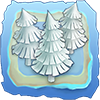

Получено: файл; исходный URL. По подписи источника — Сказочный лес после превращения. Нельзя считать начальной расстановкой; часть объектов могла быть размещена игроком. Файл получен с moy.su по пути zombicity.info, побайтовая идентичность с другим хостом не проверена; без перекодирования. Страница: источник.


Сказочный лес
историческая браузерная версия; платформа и редакция не уточнены- Тип
- Локация по каталогу ЗомбиСити
- Версия и дата
- историческая браузерная версия; платформа и редакция не уточнены
Дополнительные изображения



Данные по источнику · браузерная «Зомби Ферма» / «Зомби Мания»; платформа не уточнена · снимок каталога 10.12.2019; дата редакции неизвестна
Предварительно: Фанатский каталог; возможны общие картинки для разных локаций и зависимость от других источников.. Требуется сверка.
- Каталог
- В разделе «Новые Острова в игре» указана локация «Сказочный лес».
- Оговорка
- Каталог показывает название, картинку и ссылку; отдельная статья по этой ссылке не прочитана в рамках этого импорта. Условия доступа и версии требуют проверки.
- Сравнение снимков
- Эта же подпись, раздел и адрес картинки присутствуют в снимке того же каталога 14.09.2018; это не независимое подтверждение.
Данные по источнику · историческая браузерная Зомби Ферма / Зомби Мания · 20.12.2014 — дата в URL; дата редакции неизвестна
Предварительно: Фанатский источник; исторические данные, платформа не уточнена, независимость от ЗомбиСити не установлена.. Требуется сверка.
- Доступ и условия
- Вход через Камин, получаемый за рождественский квест «В заложниках». Заснеженные ресурсы собираются зомби-добытчиками или палочками-выручалочками, либо убираются Ба-бахами. В статье перечислены Праздничная ель, Странный снеговик и Бумажный замок; часть ссылок датирована 21 декабря, поэтому статья дополнена позднее даты в адресе.
Связанные сущности
- Камин — Сказочный лес — связан с этой локацией
- Бумажный замок — связан с этой локацией
- Праздничная ель — Сказочный лес — связан с этой локацией
- Странный снеговик — Сказочный лес — связан с этой локацией
- Мешок Санты — зелёный — локация сокровища
- Мешок Санты — синий — локация сокровища
- Мешок Санты — красный — связанная локация
- Дорожка 1 — ледовая — связанная локация
- Дорожка 2 — ледовая — связанная локация
- Дорожка 3 — ледовая — связанная локация
- Дорожка 4 — ледовая — связанная локация
- Дорожка 5 — ледовая — связанная локация
- Дорожка 6 — ледовая — связанная локация
- Условия победы — Сказочный лес — локация мини-заданий
- В заложниках — «Спасти праздник» — место действия линейки
- В сказочном лесу — «Спасти праздник» — место действия линейки
- Идея Снегурочки — «Спасти праздник» — место действия линейки
- Странности два — «Спасти праздник» — место действия линейки
- По плану — «Спасти праздник» — место действия линейки
- Прощание — «Спасти праздник» — место действия линейки
- Ель бумажная 1 — расположение
- Ель бумажная 2 — расположение
- Ель бумажная 3 — расположение
- Ель бумажная 4 — расположение
- Ель бумажная 5 — расположение
- Ель бумажная 6 — расположение
- Ель бумажная 7 — расположение
- Ель бумажная 8 — расположение
- Ель бумажная 9 — расположение
- Бумажная шишка — расположение
- Бумажные шарики 1 — белые — расположение
- Бумажные шарики 2 — синие — расположение
- Бумажные шарики 3 — расположение
- Варежка 1 — Сказочный лес — расположение
- Варежка 2 — Сказочный лес — расположение